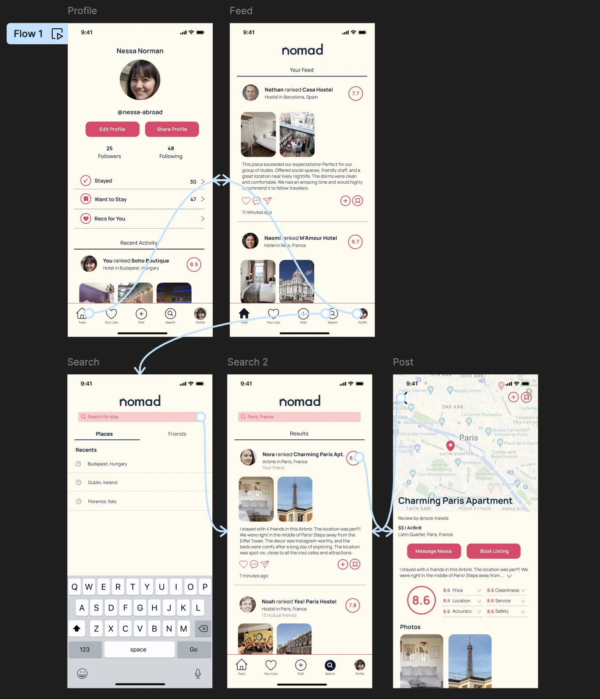
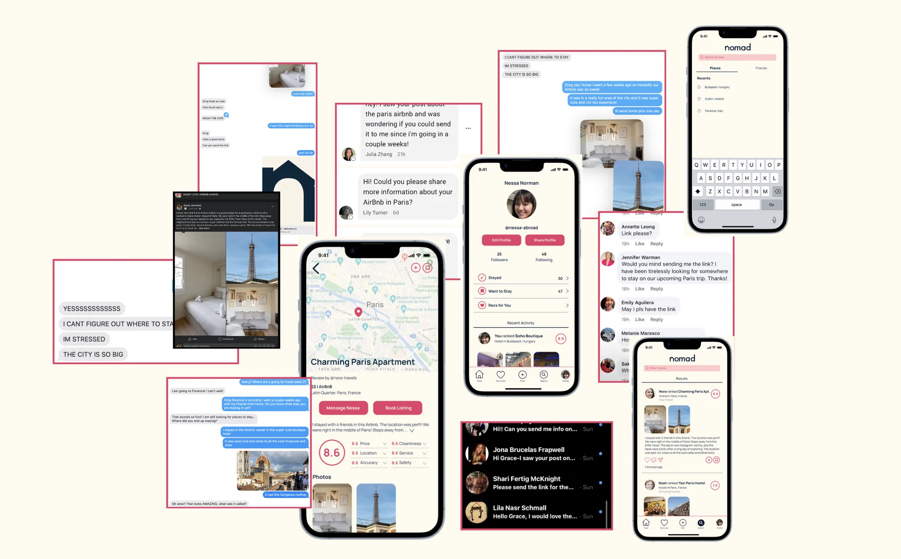
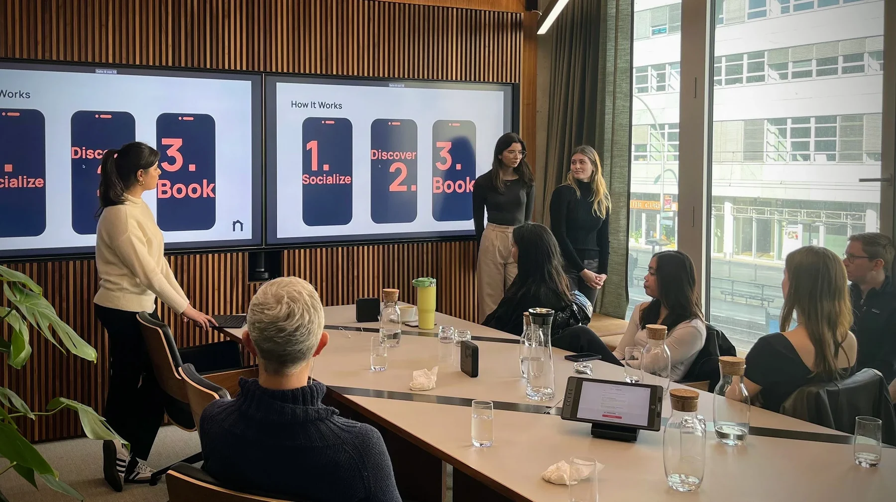

Nomad
A social travel app built on the fun of sharing experiences, and the value of accommodations your friends actually vouched for.


We started solving the wrong problem. The research told us so.
We set out to help young budget travelers, a group we knew well because we were that group. Our first problem statement was about packing: "How might we streamline packing for travel?" It felt obvious. It was also wrong.
The hardest discipline early on was resisting the jump straight to a solution. So before designing anything, we did the work: interviews, surveys, focus groups, and visits to real startup founders. What surfaced wasn't a packing problem at all. Our travelers cared about two things above everything else: affordability and convenience, especially when it came to finding somewhere to stay they could actually trust.
That pivot reframed everything. We moved from "streamline packing", an assumption based on our own habits, to trusted, social booking: finding a place to stay you trust, through people you trust. The new hypothesis was a platform built around personal recommendation and social connection, where you find accommodations through your friends' real experiences instead of a sea of anonymous reviews.

Before building anything real, we faked it well enough to learn.
An MVP lets you test an idea quickly and cheaply, so that's exactly what we did. We built app mock-ups, posted them in relevant travel groups to gauge interest, and even recommended fake accommodations to friends just to watch how they'd react. The reactions told us more than any survey could: people lit up at the idea of booking somewhere a friend had loved.

Social proof, it turned out, was the whole product. People don't want more reviews. They want trust, and trust travels through people they already know.
A concept is only as strong as the business behind it.
We modeled a business that could actually sustain itself: affiliate commissions on bookings made through partners like Airbnb and Booking.com, plus a premium subscription for exclusive features. Then we pressure-tested it with financial projections and advice from pitch coaches.
The model showed steady growth from 150 transactions in the first quarter to 2,200 by year three, turning profitable midway through year two. These numbers were never real income, they were a research-backed model built to stress-test whether Nomad could work, and to give the pitch a defensible financial story. Imaginary money, but the reasoning behind it was real, and that's what a pitch is actually testing.
Pitching is nerve-wracking. It's also the whole point.
When we first pitched, I was anxious about standing in front of experienced investors who could champion the idea or dismiss it. Our first pitch, to Creandum in Berlin, came back with a clear note: we needed a stronger customer base and real financial projections. So we went back and built exactly that.
What I learned is that a pitch lives or dies on clarity, explaining the vision and the model in plain terms, and on evidence. Investors want proof of demand, so we led with what customers actually told us. We worked with a pitch coach to anticipate the hard questions, and we leaned on storytelling, because the journey of the idea made it land.
Our final pitch was a success. We were never going to walk away with real investment, and that was never the point of the exercise, but we did walk away with genuinely valuable feedback, and the realization that pitching isn't a test to survive. It's a chance to show passion and potential.

Failure isn't an end. It's where the learning is.
I'm still not sure whether Nomad would have succeeded, and that's okay. What the project gave me was bigger than a yes or no: the confidence to take on business challenges, and a real sense of what it takes to build something from scratch.
I learned to pivot when the research told me to, to defend an idea with evidence instead of just enthusiasm, and to treat a pitch as a conversation rather than a test to survive. Most of all, I got comfortable in the messy middle, the part where you don't have the answer yet, and you build your way toward it anyway.
That's the part of design I keep coming back to.